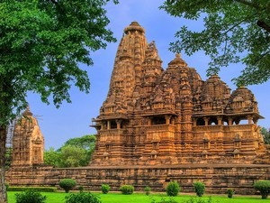
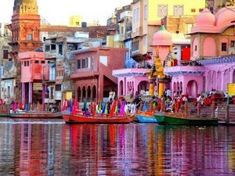

Famous places of central India
Khajuraho
The marvelous architecture and erotic carvings are the best and most notable aspects of Khajuraho temples. There were originally over 80 Hindu temples, of which only 25 now stand in a reasonable state of preservation, scattered over an area of about 8 square miles. The temples also have numerous other sculptures depicting the life of a common man in that era. Khajuraho is now under the protection of the Archaeological Survey of India...
Varanasi
The holy city of Varanasi is more than 3000 years old and is one of the oldest living cities of the world. The early settlements around Varanasi began in the 18th century BC according to archaeological evidence. During the time of Gautama Buddha, the city of Varanasi was the capital of the Kashi Kingdom. Lord Buddha is believed to have founded Buddhism here around 528 BCE when he gave his first sermon at nearby Sarnath. Varanasi subsequently declined during three centuries of Muslim occupation, beginning in 1194 AD. Varanasi became an independent kingdom in the 18th century and in 1910 the British made Varanasi a new Indian state. Varanasi became a part of Uttar Pradesh after India got independence in 1947 CE.
Haridwar

The history of Haridwar dates back to the period of King Vikramaditya, around the 2nd century BC. Haridwar is referred to as Mayapuri, Gangadwar, and Mokshadwar in the ancient Hindu texts and epics. The holy city of Haridwar is considered as old as Varanasi and according to legend; gods left their footprints in Haridwar. According to the Samudra Manthan, Haridwar along with Ujjain, Nashik, and Prayag (Allahabad) is one of the four sites where drops of Amrit (nectar) fell while it was being carried by Garuda.
Mathura
Mathura is one of the seven cities (Sapta Puri) considered holy by Hindus, the other six are Ayodhya, Haridwar, Varanasi, Kanchipuram, Ujjain and Dwarka. Mathura has been chosen as one of the heritage cities for HRIDAY - Heritage City Development and Augmentation Yojana scheme of Government of India. Mathura is also one of the popular Delhi weekend getaways for 2 day trip. Mathura is located at the banks of river Yamuna and is popularly known as the Brajbhoomi, the sacred land of Lord Krishna. The Sri Krishna Janmabhoomi temple is home to a prison cell called Garbha Griha that is believed to be the exact birthplace of Krishna. Large number of devotees visit this temple every year on Janmashtami.
Nainital
Nainital is a famous tourist destination of India, attracting large number of domestic and foreign tourists every year. Some of the important places to visit in Nainital are Naina Peak, Nainital Lake, Naina Devi Temple, Mall, Raj Bhavan, High Altitude Zoo, Bhimtal and Sattal. Naini Lake has facilities for boating and yachting. Facilities for horse riding, skating, golf, and rock climbing are also available for visitors. Nainital is also famous for its various schools and research facilities. The Observatory or The Aryabhatta Research Institute of Observational Sciences (ARIES) is the center for astronomical studies and optical tracking of artificial satellites
Gwalior
One of the most beautiful cities of Madhya Pradesh, Gwalior is very famous for its glorious history and rich cultural heritage. After being founded by Maharaja Suraj Sen in 8th century AD, Gwalior Fort was described as the pearl amongst fortresses in India. The city and its fortress have been ruled by several historic northern Indian kingdoms. From the Tomars in the 13th century, it was passed on to the Mughal Empire, then to the Maratha in 1754, followed by the Scindias in 18th century AD.